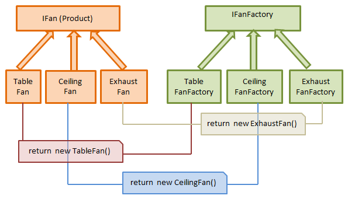

工廠設計模式屬於「創建型模式」，規範「如何創建新Object」的程序設計。簡單來說就是故名思義，把創建的過程交給「工廠（Factory）」去做，而不是用家自己做。
好處
- 可以隱藏object instantiation的過程，一旦過程有變，只需在一個地方修改，甚至不用改，只需要增加新的Factory。
- 減輕class constructor的負擔，使class更輕量。
- 在compile的時候client不需要知道他想獲取哪個concrete class，可以透過argument來向工廠獲取不同種類的。
壞處
- 要寫多很Factory，會增加code的複雜程度。
- 增加了code之間的dependencies，如果要看懂一個object instantiation過程，可能要在project裡跳來跳去，影響可讀性。
三種模式
工廠設計模式主要分為三種模式，如果直接google "Factory pattern"，會出現各式各樣的解釋，如果不分清楚這三種模式，很容易搞亂概念。
1. Simple Factory Pattern
著重避免到處製造新Object（Object instantiation），而是統一在工廠（Factory）生產。用家（Client）只能透過工廠製作出想要的object。
Static Factory Method
在Super-class裡面建立一個Factory method，return不同的sub-class instances。（不要和下面的Factory Method搞亂）
public abstract class Car {
public static Car factory(Color color) {
switch(color) {
case "RED":
return new RedCar();
case "BLUE":
return new BlueCar();
}
}
}
public class RedCar extends Car {...}
public class BlueCar extends Car {...}
Car redCar = car.factory("RED");
Simple Factory
開一個新的Factory Class，負責生產Objects：
public abstract class Car {...}
public class RedCar extends Car {...}
public class BlueCar extends Car {...}
public class CarFactory() {
public Car createCarFromColor(Color color) {
switch(color) {
case "RED":
return new RedCar();
case "BLUE":
return new BlueCar();
}
}
}
CarFactory factory = new CarFactory();
Car redCar = factory.createCarFromColor("RED");
2. Factory Method Pattern
Define an interface for creating an object, but let subclasses decide which class to instantiate. The Factory method lets a class defer instantiation it uses to subclasses. - Gang Of Four
簡單來說照這個定義，我應該先定義Factory的interface，再用implement了這個inter-frface的subclass來製造object。
按照這個定義的最基本Design：

From Factory Patterns - Factory Method Pattern (Prajapati, 2016)
對比Simple Factory，這種做法讓實際的製作過程延遲到subclass當中，日後擴充就更容易了。
Factory Method + Abstract Factory + Template Methods
Factory Method通常會伴隨著Abstract Factory和Template Method Pattern，就如以下例子。
public abstract class Product { ... }
public class ConcreteProduct extends Product { ... }
// interface for creating an object
public abstract class Creator {
public void createProduct() {
return this.factoryMethod();
}
public abstract Product factoryMethod();
}
// let subclasses decide which class to instantiate
public class ConcreteCreator extends Creator {
public Product factoryMethod() { return new ConcreteProduct(); }
}
ConcreteCreator creator = new ConcreteCreator();
Product product = creator.createProduct();
雖然這也算是Abstract Factory，但在定義上Abstract Factory比Factory Method更著重工廠可以製造"families of related objects"，詳見下文。
3. Abstract Factory Pattern
Provide an interface for creating families of related or dependent objects without specifying their concrete classes. - Gang Of Four
甚麼時候要由Factory Method升級做Abstract Factory？
- 當Factory需要製造很多相似種類的objects的時候，例如一個工廠要生產各種汽車，還要生產各種電動車，還有腳踏車，etc。
例子
假設有汽車和電動車，一個造車工廠應該要能夠製造這兩種車：
public abstract class PetrolCar { ... }
public class ConcretePetrolCar extends PetrolCar { ... }
public abstract class ElectricCar { ... }
public class ConcreteElectricCar extends ElectricCar { ... }
public abstract class CarFactory {
public PetrolCar manufacturePetrolCar();
public ElectricCar manufactureElectricCar();
}
public class GermanyCarFactory extends CarFactory {
public PetrolCar manufacturePetrolCar() { return new ConcretePetrolCar(); }
public ElectricCar manufactureElectricCar() { return new ConcreteElectricCar(); }
}
CarFactory factory = new GermanyCarFactory();
PetrolCar petrolCar = factory.manufacturePetrolCar();
ElectricCar electricCar = factory.manufactureElectricCar();
在這種設計下，我們可以隨時增加不同的工廠去生產不同汽車：
public class VeryCheapPetrolCar extends PetrolCar { ... }
public class ChinaCarFactory extends CarFactory {
public PetrolCar manufacturePetrolCar() { return new VeryCheapPetrolCar(); }
public ElectricCar manufactureElectricCar() { return new ConcreteElectricCar(); }
}
CarFactory chinaFactory = new ChinaCarFactory();
PetrolCar veryCheapPetrolCar = chinaFactory.manufacturePetrolCar();
雖然需要寫更多class出來，但使用abstract factory pattern後，例如在上面的例子中解耦（decouple）了汽車和它們的生產過程。在Client的角度，我不需要理會你有甚麼種類的汽車，反正我就選一個CarFactory去生產一些PetrolCar給我就可以了。這樣大大增加了日後擴充的自由度，以及方便寫Unit test。
- StackOverflow - Design Patterns: Abstract Factory vs Factory Method
- Factory Patterns - Abstract Factory Pattern
Factory Pattern應該甚麼時候用？ When to use?
- 當你的class constructor很擁腫的時候
- 當你create object時需要用到很多「這個class不需要知道」的東西
- 當你不在乎sub-class，只在乎super-class的時候（例如你只要一些
Animal，不在乎Dog或Cat） - 當你有很多sub-classes，而它們的create方法大同小異的時候
- 其實你不一定需要Factory
例子
interface Connection {
void open();
}
public class HTTPConnection implements Connection {
URL url;
public HTTPConnection(URL url) {
this.url = url;
}
public void open() {
// Open url with browser
}
}
public class SSHConnection implements Connection {
Server destinationServer;
public SSHConnection(Server destinationServer) {
this.destinationServer = destinationServer;
}
public void open() {
// Open a terminal and ssh into the destination server
}
}
例如現在有一條String link = "https://www.xxx.com";，如果我要開啟它，豈不是要分辨它是HTTPConnection、製作一個URL object、然後instantiate它，才能使用open()？
這時候就可以寫一個factory，在factory裡做完所有這些步驟，最後反正是給我一個可以open()的connection就可以了。最後變成：
ConnectionFactory factory = new ConnectionFactory();
Connection conn = factory.createConnection(link);
conn.open();
是不是有夠簡潔呢～
（如果已經有進行中的Connection，你還可以叫工廠return現有的，而不用建立新Connection！不過這個很個別的例子了。）
References
- StackExchange - Why should I use a factory class instead of direct object construction?
- Factory Method in Python
- 簡單工廠模式(Simple Factory Pattern)
- Quora - What are the pros and cons of the factory design pattern?
- Factory Design Pattern in Java
- Simple Factory Vs Factory Method Vs Abstract Factory by Example
- StackOverflow - Design Patterns: Factory vs Factory method vs Abstract Factory
- StackExchange - Why is the factory method design pattern more useful than having classes and calling them individually?
- Constructors or Static Factory Methods?
- Factory Patterns - Simple Factory Pattern